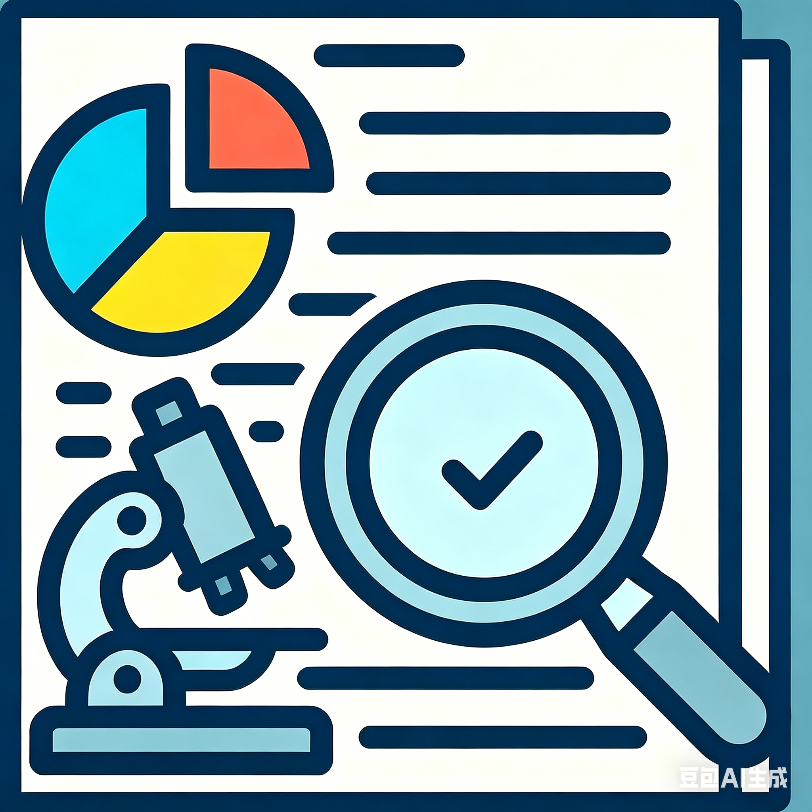
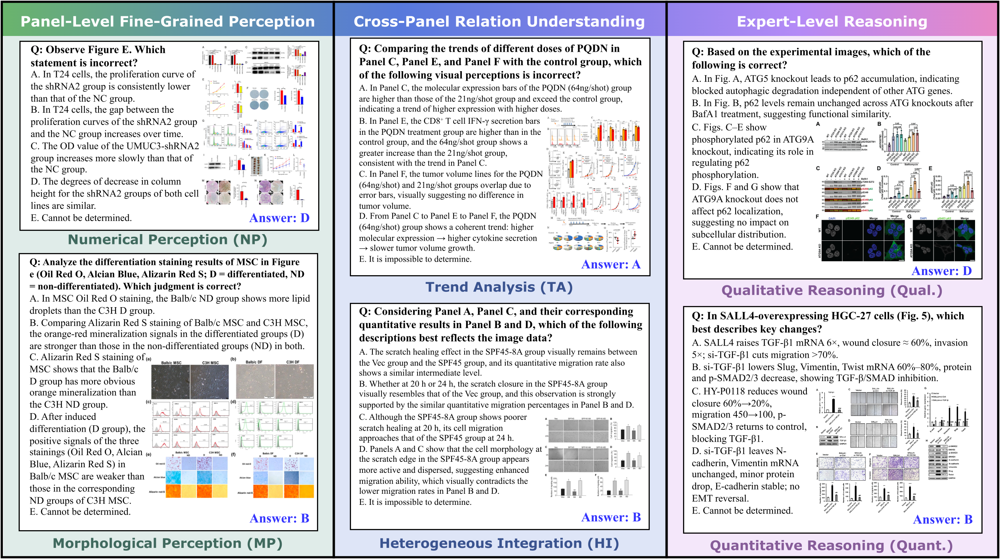
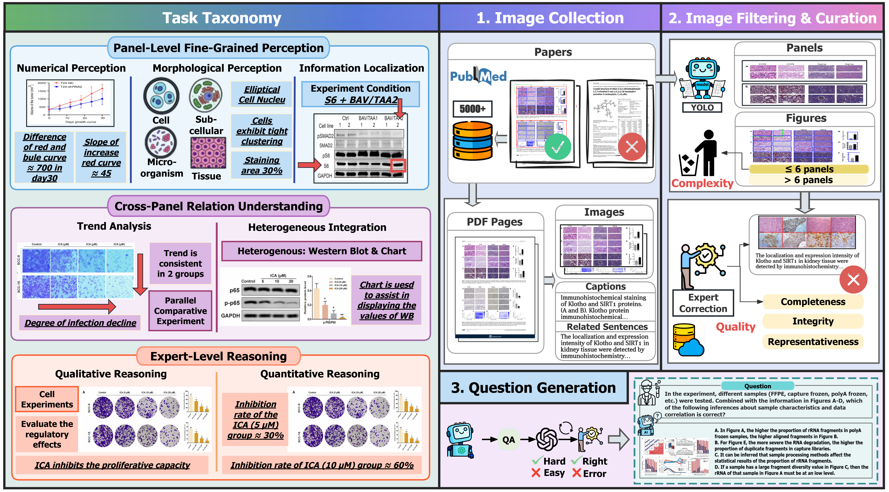

SPUR
Decoding Scientific Experimental Images: The SPUR Benchmark for Perception, Understanding, and Reasoning
Beijing University of Posts and Telecommunications
* Corresponding author
Abstract
We introduce SPUR, a comprehensive benchmark for scientific experimental image perception, understanding, and reasoning, comprising 4,264 question-answering (QA) pairs derived from 1,084 expert-curated images. SPUR features three key innovations: (1) Panel-Level Fine-Grained Perception: evaluating the visual perception of multimodal large language models (MLLMs) across three dimensions (numerical, morphological, and information localization) on six fine-grained panel types; (2) Cross-Panel Relation Understanding: utilizing complex images with an average of 14.3 panels per sample to evaluate MLLMs' ability to decipher intricate cross-panel relations; (3) Expert-Level Reasoning: assessment of qualitative and quantitative reasoning across five experimental paradigms to determine if models can infer conclusions from evidence as human experts do. Comprehensive evaluation of 20 MLLMs and four multimodal Chain-of-Thought (MCoT) methods reveals that current models fall significantly short of the expert-level requirements for scientific image interpretation, underscoring a critical bottleneck in AI for Science (AI4S) research.
Key Figures

